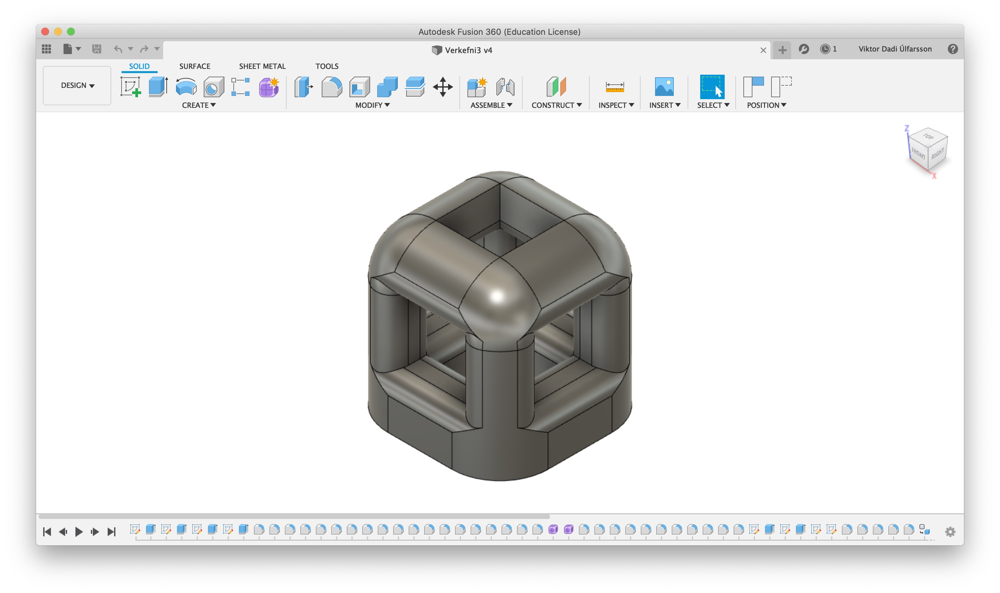
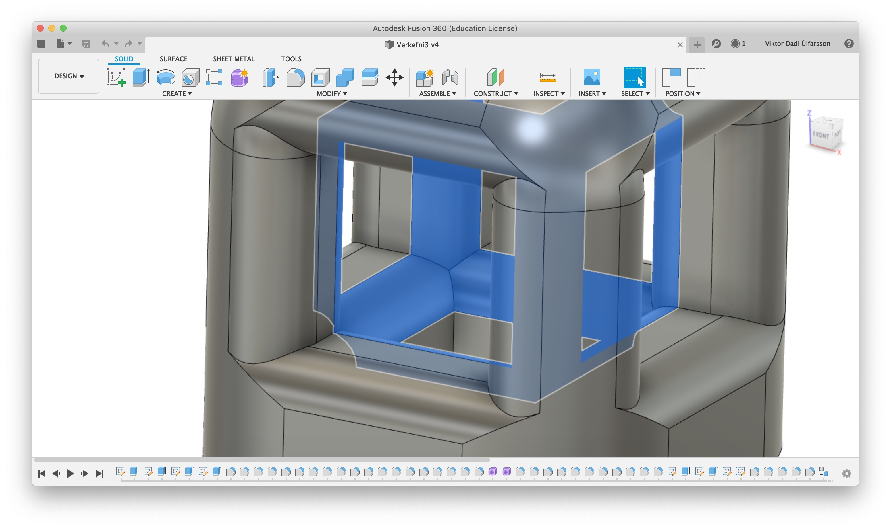
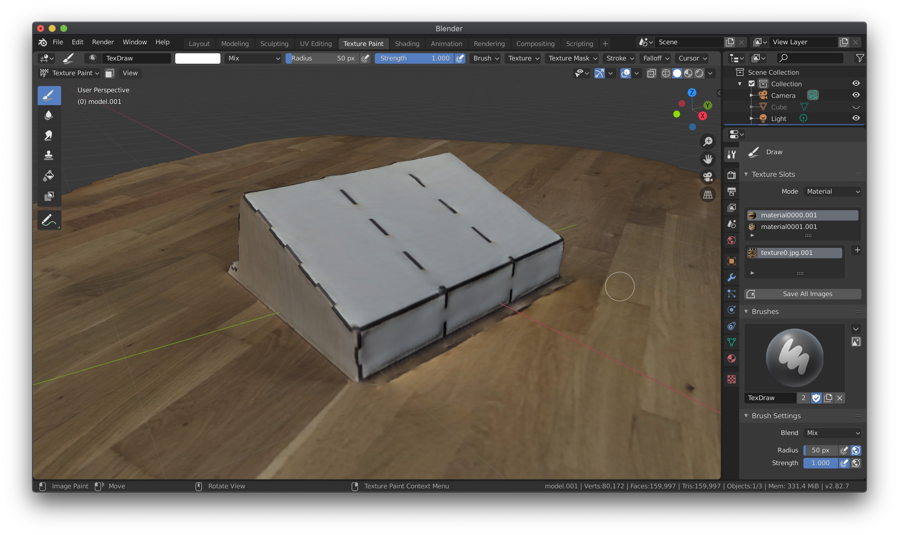
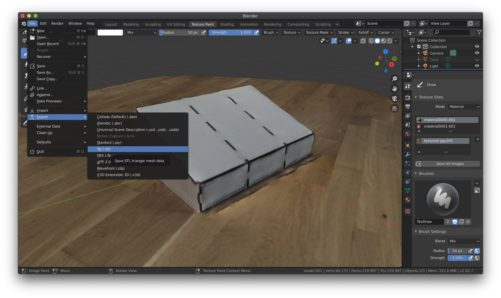
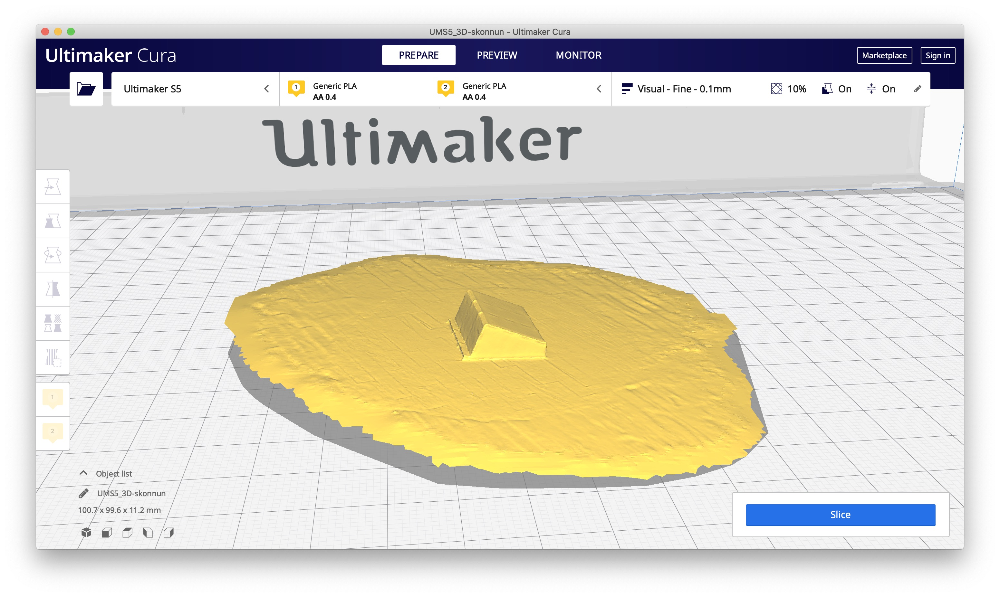

3 - 3D scanning and printing
Upphafið
Eins og áður við byrjun verkefna þá þurfti ég að byrja á því að kynna mér aðferðir til að vinna verkefnið. Til þess fór ég á heimasíðu námskeiðisins og skoðaði kennslumyndband um 3D skönnun og prentun.
Þegar að ég hafði náð mér í nægilega þekkingu fór ég og lagði höfuðið í bleyti.
Hérna vandaðist aðeins málið. Í verkefnalýsingunni fyrir þetta verkefnið var beðið um að gera 3D prenta eitthvað sem að ekki væri hægt með venjulegum aðferðum að fræsa út eða renna. Þarna var ég alveg tómur og mér datt ekkert í hug sem að mig vantaði eða langaði sérstaklega að gera sem að tikkaði í öll box verkefnisins.
Það sem að ég ákvað þá að gera var að teikna bara eitthvað sem að væri ekki hægt að fræsa eða renna, einskonar kubb til að sýna fram á eiginleika 3D prentunar.
Það sem að ég teiknaði í Fusion360 var þá þetta, ekki mitt besta verk en þegar hugmyndir eru á þrotum þá verður maður að redda sér.

Hugmyndin var þá að þarna erum við með mjög einfaldan kass sam að við fyrstu sýn væri auðvelt að fræsa. Vegna þess að þarna inni í kassanum eru rúnuð horn allt í kring um miðjuna þá væri ekki mögulegt fyrir fræsi haus til dæmis á stórri 6 axis CNC vél eða álíka að komast þarna inn og gera þetta. Þarna væri því aðeins hægt að annað hvort 3D prenta þetta eða hugsanlega nota molding and casting.
Rúnuðu (e. fillet) hornin má sjá hér að neðan, þau eru blá.

Þegar að þetta var komið þá exportaði ég skránni sem .stl skrá. Ég náði svo í Ultimaker Cura forritið fyrir 3D prentarana í FabLab til þess að sjá fyrir mér hvernig þetta myndi koma út.
Nú var hugmyndavinnu og hönnun lokið og komið að prenta.
Ég fór því niður í FabLab og hófst handa.
Það fyrsta sem að ég gerði þar var að horfa á þetta frábæra myndband sem að Arnar gerði sem að fer yfir allt sem að þarf að gera til þess að stilla upp cura forritið fyrir prentun. Ég fylgdi því öllum leiðbeiningum Arnars og hófst svo handa við að prenta.
Þegar að allar stillingar höfðu verið stilltar þá sagði Cura að þetta myndi taka 2 tíma og 39 mínútur að prenta og að 27 grömm af efni myndu fara í þetta.
Næsta skref var svo að færa þetta yfir í prentaran til prentunar.
Næsta skref var svo bara að bíða eftir því að þetta myndi klárast. Vegna þess að ég þurfti að fara annað þá ákvað ég að yfirgefa FabLab á meðan á prentun stóð. Ég fékk því Mána, sem að var í FabLab þennan dag að láta mig vita þegar að þetta væri búið svo að ég gæti komið og sótt stykkið.
Þegar að nokkur tími var liðinn þá fékk ég þessi skilaboð frá Mána.
Þarna fékk ég aðeins fyrir hjartað, ég var fastur annarstaðar og gat ekki komið til að laga þetta og allt stefndi í að ég næði ekki að klára að prenta þetta.
Ég hafði greinilega gleymt að segja prentaranum að vera ekki að skipta um efni og klúðraði þessu því.
Máni bjargaði mér þó og sá aumur á mér, hann bauðst því til að setja þetta aftur af stað með breyttum stillingum, takk Máni. Þetta varð þó til þess að prentunin kláraðist eftir að FabLab lokaði og vegna COVID-19, samkomubanns og lokunar Fablab náði ég ekki að sækja kubbinn.
Hér að neðan má svo sækja .stl skrá auk Fusion 360 skrá af kubbinum.
Fyrir þennan hluta verkefnisins var ég einnig í smá vanda þar sem að ég er með MacBook tölvu. Ég fann nefnilega ekkert forrit til þess að gera photogrammetry sem að virkaði fyrir macOS.
Þar sem að ég hef gaman að því að skoða aðrar og einfaldari lausnir sem að geta hentað öllum þrátt fyrir að þeir hafi ekki aðgang að flóknum forritum ákvað ég að leita að appi sem að gæti hugsanlega gert eitthvað svipað.
Ég fór því á App store og leitaði eftir photogrammetry, eftir smá leit fann ég lítið sem að var að heilla mig svo að ég leitaði til google og fann þessa grein þar sem að mælt var með Trnio. Það kostaði aftur á móti tæplega 5$ en þar sem að ég var tilbúinn að taka það á mig fyrir málstaðinn ákvað ég að prófa appið.
Þegar að photogrammetry appið var komið ákvað ég að taka hlutinn sem að ég bjó til í verkefni 2 og scanna hann inn.
Ég fór því í gegnum leiðbeiningarnar í appinu og var það mjög auðvelt. Appið notar svokallað AR-Kit í iOS til þess að taka myndir af hlutnum og setja saman í 3D.
Þegar að þetta var búið og appið búið að klára sitt var þetta niðurstaðan.
Niðurstaðan var að mínu mati mjög góð og fór algjörlega fram úr mínum væntingum.
Þegar að þetta er búið er svo hægt að fá .OBJ skrár sendar í zip skrá á t.d. email og er þaðan hægt að vinna með þær í Blender eða álíka forritum.
Ég ákvað að gera þetta þar sem að ég ætlaði síðan að breyta .OBJ skránum yfir í .stl og prófa að setja þær í Ultimaker Cura.
Ég náði því í Blender og opnaði .obj skrána úr appinu þar.

Þegar að það var komið, export-aði ég .obj skránni í .stl skrá til þess að geta svo skoðað hana í Ultimaker Cura.

Loks opnaði ég svo .stl skrána í Ultimaker Cura.

Hugmyndaferli - 3D printing
3D printing
Niðurstaða
CAD model og .stl skrár
3D - scanning
Niðurstaða
Íhugun í lokin
Að mínu mati er þetta þó ekki verri lausn. Með þessari aðferð má sleppa við það að taka fleiri tugi mynda og setja þær inn í forrit til þess að keyra svo í enn lengri tíma til að fá skönnun.
Með þessu getur hver sem er (fullt af fríum photogrammetry öppum til sem gera sama hlutinn) skannað inn hluti og prentað þá út með litlum vandræðum.
.stl og .obj skrár
Hér að neðan má svo sækja .stl skrá auk zip skrá með .obj skrá sem að skönnuð var.
Tímatafla
| Dagsetning | Lýsing | Tími í klst. |
| 19.02.2020 | Undirbúningur/hugmyndavinna og horft á kennslumyndbönd | 2.0 klst. |
| 20.02.2020 | Teikning á kassa, CAD skjal | 1.0 klst. |
| 24.02.2020 | Undirbúningur á 3D skönnun | 1.5 klst. |
| 24.02.2020 | 3D skönnun og eftirvinnsla | 2.0 klst. |
| 13.03.2020 | Undirbúningur á 3D prentun í Fablab | 1.0 klst. |
| 14.03.2020 | 3D prentun í FabLab | 1.5 klst. |
| 14.03.2020 | Endurtekin 3D prentun | 2.5 klst. |
| Samtals: | 11.5 klst. |